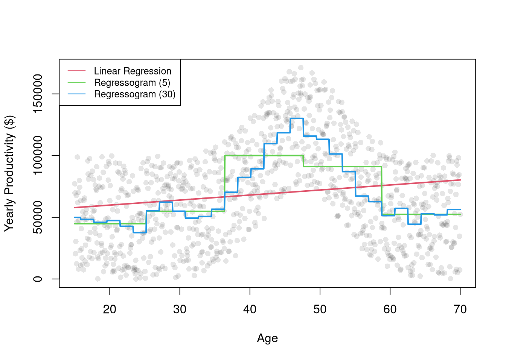

The interpretation of regression coefficients as ``the effect’’ assumes the linear model is true. If you fit a line to a non-linear relationship then you will get back a number, but there is no singular the effect if the true relationship is non-linear! Consider a classic example, Anscombe’s Quartet, which shows four very different datasets that give the same linear regression coefficient. You understand the problem because we used scatterplots to visual the data.1
Code
################### Anscombe##################par(mfrow=c(2,2))for(i in1:4){ xi <- anscombe[,paste0('x',i)] yi <- anscombe[,paste0('y',i)]plot(xi, yi, ylim=c(4,13), xlim=c(4,20),pch=16, col=grey(0,.6)) reg <-lm(yi~xi) b <-round(coef(reg)[2],2) p <-round(summary(reg)$coefficients[2,4],4)abline(reg, col='orange')title(paste0("Slope=", b,', p=',p), font.main=1)}
Code
## For an even better example, see `Datasaurus Dozen'#browseURL(#'https://bookdown.org/paul/applied-data-visualization/#why-look-the-datasaurus-dozen.html')
It is true that “OLS is the best linear predictor of the nonlinear regression function if the mean-squared error is used as the loss function.” . But this is not a carte-blanche justification for OLS, as the best of the bad predictors is still a bad predictor. For many economic applications, it is more helpful to think and speak of “dose response curves” instead of “the effect”.
While adding interaction terms or squared terms allows one incorporate heterogeneity and non-linearity, they change several features of the model (most of which are not intended). Often, there are nonsensical predicted values. For example, if the most of your age data are between \([23,65]\), a quadratic term can imply silly things for people aged \(10\) or \(90\).
Nonetheless, OLS provides an important piece of quantitative information that is understood by many. All models are an approximation, and sometimes only unimportant nuances are missing from a vanilla linear model. Other times, that model can be seriously misleading. (This is especially true if your making policy recommondations based on a universal ``the effect’’.) As an exploratory tool, OLS is a good guess but one whose point estimates should not be taken too seriously (in which case, the standard errors are also much less important). Before trying to find a regression specification that makes sense for the entire dataset, explore local relationships.
Local Relationships.
Scatterplots are a great and simplest plot for bivariate data that simply plots each observation. There are many extensions and similar tools. The example below shows two ways of summarizing the information; in both cases helping you understand how the central tendency and dispersion change.
Code
################### Application: Summarizing wages##################library(wooldridge)## Plot 1plot(wage~educ, data=wage1, pch=16, col=grey(0,.1))educ_means <-aggregate(wage1[,c("wage","educ")], list(wage1$educ), mean)points(wage~educ, data=educ_means, pch=17, col='blue', type='b')title("Grouped Means and Scatterplot", font.main=1)
Code
## Plot 2 (Less informative!)#barplot(wage~educ, data=educ_means)#title("Bar Plot of Grouped Means")
Regressograms.
Just as we use histograms to describe the distribution of a random variable, we can use a regressogram for conditional relationships. Specifically, we can use dummies for exclusive intervals or bins to estimate how the average value of \(Y\) varies with \(X\).
After dividing \(X\) into \(1,...L\) exclusive bins of width \(h\). Each bin has a midpoint, \(x\), and an associated dummy variable \(\hat{D}_{i}(x,h) = \mathbf{1}\left(\hat{X}_{i} \in \left(x-h/2,x+h/2\right] \right)\).2 Then conduct a dummy variable regression \[\begin{eqnarray}
\hat{Y}_{i} &=& \sum_{x \in \{x_{1}, ..., x_{L} \}} b_{0}(x,h) \hat{D}_{i}(x,h) + e_{i},
\end{eqnarray}\] where each bin has a coefficient \(b_{0}(x,h)\).
Consider this two-bin example of how age affects wage for people aged \(10\) to \(70\). \[\begin{eqnarray}
\text{Wage}_{i} &=& b_{0}(x=25, h=15) \mathbf{1}\left(\text{Age}_{i} \in (10,40]\right) + b_{0}(x=55, h=15) \mathbf{1}\left(\text{Age}_{i} \in (40,70] \right) + e_{i}.
\end{eqnarray}\] You could also look at yearly bins and see if a tri-part grouping emerges naturally or not (e.g., whether the main effect on wages is whether your not in school or retired). You can choose other bins as well.
Code
################### Regressogram#################### AgesXmx <-70Xmn <-15##Generate N Observationsdat_sim <-function(n=1000){ n <-1000 X <-seq(Xmn,Xmx,length.out=n)## Random Productivity e <-runif(n, 0, 1E6) beta <-1E-10*exp(1.4*X -.015*X^2) Y <- (beta*X + e)/10return(data.frame(Y,X))}dat <-dat_sim(1000)X <- dat$X## Plotplot(Y~X, data=dat, pch=16, col=grey(0,.1),ylab='Yearly Productivity ($)', xlab='Age' )## Regression Estimatesreg1 <-lm(Y~X, data=dat) ## OLSpred1 <-cbind( Y=predict(reg1), X)[order(X),]dat$xcc <-cut(X, seq(Xmn-1,Xmx,length.out=6)) ## Course Age Binsreg2 <-lm(Y~xcc, data=dat)pred2 <-cbind( Y=predict(reg2), X)[order(X),]dat$xcf <-cut(X, seq(Xmn-1, Xmx, length.out=31)) ## Fine Age Binsreg3 <-lm(Y~xcf, data=dat)pred3 <-cbind( Y=predict(reg3), X)[order(X),]## Compare Modelslines(Y~X, data=pred1, lwd=2, col=2)lines(Y~X, data=pred2, lwd=2, col=3)lines(Y~X, data=pred3, lwd=2, col=4)legend('topleft',legend=c('Linear Regression','Regressogram (5)','Regressogram (30)'),lty=1, col=2:4, cex=.8)

Notice that each bin has \(n(x,h) = \sum_{i}^{n}\hat{D}_{i}(x,h)\) observations. This means se can split the dataset into parts associated with each bin \[\begin{eqnarray}
\label{eqn:regressogram1}
\sum_{i}^{n}\left[e_{i}\right]^2
&=& \sum_{i}^{n}\left[\hat{Y}_{i}- \sum_{x \in \{x_{1}, ..., x_{L} \}} b_{0}(x,h) \hat{D}_{i}(x,h) \right]^2 \\
&=& \sum_{i}^{n(x_{1},h)}\left[\hat{Y}_{i}- \sum_{x \in \{x_{1}, ..., x_{L} \}} b_{0}(x,h) \hat{D}_{i}(x,h) \right]^2 + ... \nonumber \\
& & \sum_{i}^{n(x_{L},h)}\left[\hat{Y}_{i}- \sum_{x \in \{x_{1}, ..., x_{L} \}} b_{0}(x,h) \hat{D}_{i}(x,h) \right]^2 \\
&=& \sum_{i}^{n(x_{1},h)}\left[\hat{Y}_{i}- b_{0}\left(x_1,h\right) \right]^2 + ... \sum_{i}^{n(x_L,h)}\left[\hat{Y}_{i}-b_{0}\left(x_L,h\right) \right]^2 % +~ (N-1)\sum_{i}\hat{Y}_{i}.
\end{eqnarray}\] This separation allows us optimize for each bin separately \[\begin{eqnarray}
\label{eqn:regressogram2}
\min_{ \left\{ b_{0}(x,h) \right\} } \sum_{i}^{n}\left[e_{i}\right]^2
&=& \min_{ \left\{ b_{0}(x,h) \right\} } \sum_{i}^{n(x,h)}\left[\hat{Y}_{i}- b_{0}\left(x,h\right) \right]^2,
\end{eqnarray}\] since, in either case, minimizing yields \[\begin{eqnarray}
0 &=& -2 \sum_{i}^{n(x,h)}\left[ \hat{Y}_{i} - b_{0}(x,h) \right] \\
\hat{b}_{0}(x,h) &=& \frac{\sum_{i}^{n(x,h)} \hat{Y}_{i}}{ n(x,h) } = \hat{M}_{Y}(x,h) .
\end{eqnarray}\] As such, the OLS regression yields coefficients that are interpreted as the conditional mean: \(\hat{M}_{Y}(x,h)\). We can directly compute the same statistic directly by simply takes the average value of \(\hat{Y}_{i}\) for all \(i\) observations in a particular bin. The values predicted by the model are then found as \(\hat{y}_{i} = \sum_{x} \hat{b}_{0}(x,h) \hat{D}_{i}(x,h)\).
Interestingly, we can obtain the same statistic from weighted least squares regression. For some specific design point, \(x\), we can find \(\hat{b}(x, h)\) by minimizing \[\begin{eqnarray}
\sum_{i}^{n}\left[ e_{i} \right]^2 \hat{D}_{i}(x,h) &=& \sum_{i}^{n}\left[ \hat{Y}_{i}- b_{0}(x,h) \right]^2 \hat{D}_{i}(x,h) \\
&=& \sum_{i}^{n(x_{1},h)}\left[ \hat{Y}_{i}- b_{0}(x_{1},h) \right]^2 \hat{D}_{i}(x_{1},h) + ... \sum_{i}^{n(x_{L},h)}\left[ \hat{Y}_{i}- b_{0}(x_{L},h) \right]^2 \hat{D}_{i}(x_{L},h) \\
&=& \sum_{i}^{n(x,h)}\left[\hat{Y}_{i}- b_{0}\left(x,h\right) \right]^2
\end{eqnarray}\]
Piecewise Regression.
The regressogram depicts locally constant relationships. We can also included slope terms within each bin to allow for locally linear relationships. This is often called segmented/piecewise regression, which runs a separate regression for different subsets of the data.
For many things, a simple linear regression, regressograms, or piecewise regression is “good enough”. Simple linear regressions struggle with nonlinear relationships but are very easy to run with a computer. Regressograms and piecewise regressions are intuitive ways to capture nonlinear relationships that are computationally efficient but have obvious problems where the bins change. Sometimes we want smoother predictions or to estimate derivatives (gradients). To cover more advanced regression methods that do those things, we will need to first learn about kernel density estimation.
12.2 Kernel Density Estimation
A kernel density is generally a “smooth” version of a histogram. We estimate the density at many points (e.g., all unique values \(x\) in the dataset), not just the midpoints of exclusive bins. The uniform kernel and density estimator is \[\begin{eqnarray}
\label{eqn:uniform}
\widehat{f}_{U}(x) &=& \frac{1}{n} \sum_{i}^{n} \frac{k_{U}(\hat{X}_{i}, x, h) }{2h} \\
k_{U}\left( \hat{X}_{i}, x, h \right) &=& \mathbf{1}\left(\frac{|\hat{X}_{i}-x|}{h}<1\right)
= \mathbf{1}\left( \hat{X}_{i} \in \left( x-h, x + h\right) \right).
\end{eqnarray}\] Comparing equations \(\ref{eqn:uniform}\) to \(\ref{eqn:indicator}\), we can see the uniform kernel is essentially the histogram but without the restriction that \(x\) must be a midpoint of exclusive bins. Typically, the points \(x\) are chosen to be either the unique observations or some equidistant set of “design points”.
We can also replace the uniform kernel with a more general kernel function \(k\), which is then normalized to an easier to read and program \(K\) function: \(k\left( \hat{X}_{i}, x, h \right)= K\left( \frac{|\hat{X}_{i}-x|}{h} \right)\). We can then define a general kernel function as a non-negative real-valued function \(K\) that integrates to unity: \[\begin{eqnarray}
\int_{-\infty}^{\infty} K(v) dv &=& 1
\end{eqnarray}\] The general idea behind kernel density is to use windows around each \(x\) that potentially overlap, rather than partitioning the range of \(X\) into exclusive bins.3 For examples of some common kernels, see https://en.wikipedia.org/wiki/Kernel_(statistics)#In_non-parametric_statistics. In my view, these are the most intuitive and common.
Code
################### Kernel Density Functions##################X <-seq(-2,2, length.out=1001)plot.new()plot.window(xlim=c(-1.2,1.2), ylim=c(0,1))h <-1lines( dunif(X,-h,h)~X, col=1, lty=1)h <-1/2lines( dnorm(X,0,h)~X, col=2, lty=1)dtricub <-function(X, x=0, h){ u <-abs(X-x)/h fu <-70/81*(1-u^3)^3/h*(u <=1)return(fu)}h <-1lines( dtricub(X,0,h)~X, col=3, lty=1)h <-1/2lines(density(x=0, bw=h, kernel="epanechnikov"), col=4, lty=1)## Note that "density" defines h slightly differentlyrug(0, lwd=2)axis(1)axis(2)legend('topright', lty=1, col=1:4,legend=c('uniform(1)', 'gaussian(1/2)', 'tricubic(1)', 'epanechnikov(1)'))
Once we have picked a kernel (which particular one is not particularly important) we can use it to compute density estimates.
Code
################### Kernel Density Estimation##################N <-1000e <-rweibull(N,100,100)ebins <-seq(floor(min(e)), ceiling(max(e)), length.out=12)## Histogram Estimates at 12 pointsxbks <-c(ebins[1]-diff(ebins)[1]/2, ebins+diff(ebins)[1]/2)hist(e, freq=F, main='', breaks=xbks, ylim=c(0,.4), border=NA)rug(e, lwd=.07, col=grey(0,.5)) ## Sample## Manually Compute Uniform Estimate at X=100 with h=2# w100 <- (e < 101)*(e > 99)# sum(w100)/(N*2)## Gaussian Estimates at same points as histogramF_hat <-sapply(ebins, function(x,h=.5){ kx <-dnorm( abs(e-x)/h ) fx <-sum(kx,na.rm=T)/(h*N) fx})## Verify the samefhat1 <-density(e, n=12, from=min(ebins), to=max(ebins), bw=.5)points(fhat1$x, fhat1$y, pch=16, col=rgb(0,0,1,.5), cex=1.5)## Gaussian Estimates at all sample pointsfhat2 <-density(e, n=1000, from=min(ebins), to=max(ebins), bw=.5)points(fhat2$x, fhat2$y, pch=16, col=rgb(1,0,0,.25), cex=.5)legend('topleft', pch=c(15,16,16),col=c(grey(0,.5),rgb(0,0,1,.5), rgb(1,0,0,.25)),title='Type (# Design Points)', bty='n',legend=c('Histogram (12)','Gaussian-Kernel (12)','Gaussian-Kernel (1000)'))
12.3 Local Linear Regression
It is safer to assume that you could be analyzing data with nonlinear relationships. A general nonparametric model is written as \[\begin{eqnarray}
\hat{Y}_{i} = m(\hat{X}_{i}) + \epsilon_{i}
\end{eqnarray}\] where \(m\) is an unknown continuous function and \(\epsilon\) is white noise. (As such, the linear model is a special case.) You can estimate the mean of \(Y_{i}\) conditional on \(X_{i}=x\) with a regressogram or a variety of other least-squares procedures.
Locally Constant.
Consider a point \(x\) and suppose \(\hat{Y}_{i} = b(x,h) + e_{i}\) locally. Then notice a weighted OLS estimator with uniform kernel weights yields \[\begin{eqnarray} \label{eqn:lcls}
& & \min_{b(x,h)}~ \sum_{i}^{n}\left[e_{i} \right]^2 k_{U}\left( \hat{X}_{i}, x, h \right) \\
\Rightarrow & & -2 \sum_{i}^{n}\left[\hat{Y}_{i}- b(x,h) \right] k_{U}\left(\hat{X}_{i}, x, h\right) = 0\\
\label{eqn:lcls1}
\Rightarrow & & \hat{b_{U}}(x)
= \frac{\sum_{i} \hat{Y}_{i} k_{U} \left( \hat{X}_{i}, x, h \right) }{ \sum_{i} k_{U}\left( \hat{X}_{i}, x, h \right) }
= \sum_{i} \hat{Y}_{i} \left[ \frac{ k_{U} \left( \hat{X}_{i}, x, h \right) }{ \sum_{i} k_{U}\left( \hat{X}_{i}, x, h \right)} \right] = \sum_{i} \hat{Y}_{i} w_{i},
\end{eqnarray}\] where weight \(w_{i} = \mathbf{1}\left( |\hat{X}_{i} - x| < h \right)/N\). The last equality is derived analogously to equation \(\ref{eqn:sum}\); where \(k_{U} \left( \hat{X}_{i}, x, h \right)\) is either one or zero, and \(\sum_{i} k_{U} \left( \hat{X}_{i}, x, h \right) = n(x,h)\).
When \(n\) is small, \(\hat{b}_{U}(x)\) is typically estimated for each unique observed value: \(x \in \{ x_{1},...x_{n} \}\). For large datasets, you can select a subset or evenly spaced values of \(x\) for which to estimate \(\hat{b}_{U}(x)\). If we use exclusive bins, then equation \(\ref{eqn:regressogram1}\) equals \(\ref{eqn:lcls1}\), which shows the regressogram is a kernel regression weights that recovers the conditional mean. This regressogram is more crude but can be estimated with OLS.
The basic idea also generalizes other kernels. As such, a kernel regression using uniform weights is often called a ``naive kernel regression’’. Typically, kernel regressions use kernels that weight nearby observations more heavily. We can also add a slope term to improve the fit.
If \(X\) represents time, then the local constant regressions is also called a moving average. With non-uniform kernel weights, we have a weighted moving average.
Locally Linear.
A less simple case is a local linear regression which conducts a linear regression for each data point using a subsample of data around it. Consider a point \(x\) and suppose \(\hat{Y}_{i} = b_{0}(x,h) + b_{1}(x) \hat{X}_{i} + e_{i}\) for data near \(x\). The weighted OLS estimator with kernel weights is \[\begin{eqnarray}
& & \min_{b_{0}(x,h),b_{1}(x,h)}~ \sum_{i}^{n}\left[\hat{Y}_{i}- b_{0}(x,h) - b_{1}(x,h) \hat{X}_{i} \right]^2 K\left(\frac{|\hat{X}_{i}-x|}{h}\right)
\end{eqnarray}\] Deriving the optimal values \(\hat{b}_{0}(x,h)\) and \(\hat{b}_{1}(x,h)\) for \(k_{U}\) is left as a homework exercise.4
Code
# ``Naive" Smootherpred_fun <-function(x0, h, xy){# Assign equal weight to observations within h distance to x0# 0 weight for all other observations ki <-dunif(xy$x, x0-h, x0+h) llls <-lm(y~x, data=xy, weights=ki) yhat_i <-predict(llls, newdata=data.frame(x=x0))}X0 <-sort(unique(xy$x))pred_lo1 <-sapply(X0, pred_fun, h=2, xy=xy)pred_lo2 <-sapply(X0, pred_fun, h=20, xy=xy)plot(y~x, pch=16, data=xy, col=grey(0,.5),ylab='Murder Rate', xlab='Population Density')cols <-c(rgb(.8,0,0,.5), rgb(0,0,.8,.5))lines(X0, pred_lo1, col=cols[1], lwd=1, type='o')lines(X0, pred_lo2, col=cols[2], lwd=1, type='o')legend('topleft', title='Locally Linear',legend=c('h=2 ', 'h=20'),lty=1, col=cols, cex=.8)
Note that there are more complex versions of local linear regressions (see https://shinyserv.es/shiny/kreg/ for a nice illustration.) An even more complex (and more powerful) version is loess, which uses adaptive bandwidths in order to have a similar number of data points in each subsample (especially useful when \(X\) is not uniform.)
The bins do not all need to have the same width, but that is a good default and more notationally convenient than letting the bandwidth depend on the bin; \(h(x)\).↩︎
We only examine symmetric kernels, as some texts also include symmetric in the definition of a kernel; \(K(v) = K(-v)\).↩︎
Note that one general benefit of LLLS is with edge effects (see homework). Another is that it is theoretically motivated: assuming that \(Y_{i}=m(X_{i}) + \epsilon_{i}\), we can then take a Taylor approximation: \(m(X_{i}) + \epsilon_{i} \approx m(x) + m'(x)[X_{i}-x] + \epsilon_{i} = [m(x) - m'(x)x ] + m'(x)X_{i} + \epsilon_{i} = b_{0}(x,h) + b_{1}(x,h) X_{i}\). As such, a third benefit is that the estimated slope coefficient \(\hat{b}_{1}(x,h)\) can be interpreted as the estimated gradient at \(x\).↩︎